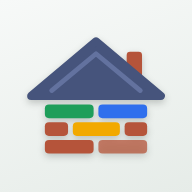

Nossa casa
Av. Terezina, 928 · Bairro Brasil
Abrir o app
Para pôr na tela inicial
Android (Chrome): menu ⋮ → Adicionar à tela inicial.
iPhone (Safari): botão Compartilhar → Adicionar à Tela de Início.
Depois é só tocar no ícone da casinha.
Android (Chrome): menu ⋮ → Adicionar à tela inicial.
iPhone (Safari): botão Compartilhar → Adicionar à Tela de Início.
Depois é só tocar no ícone da casinha.